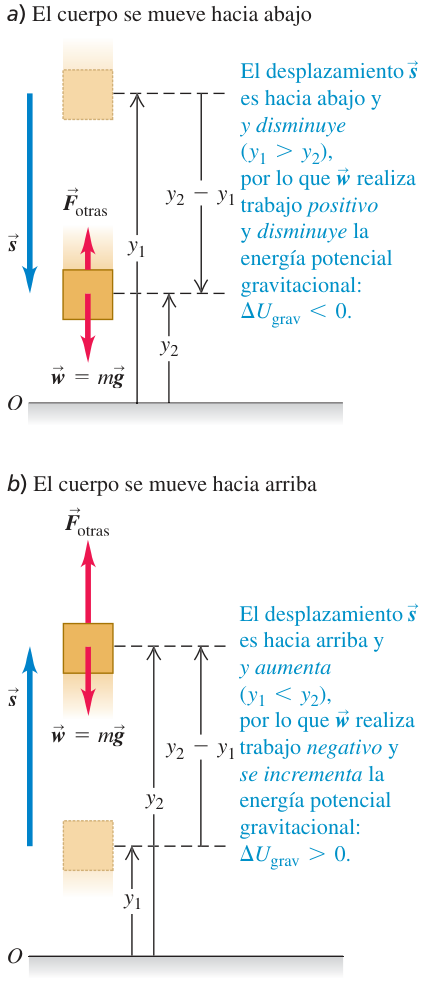
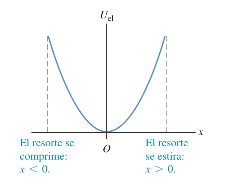
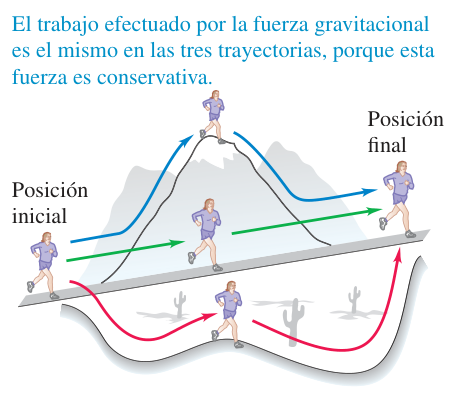
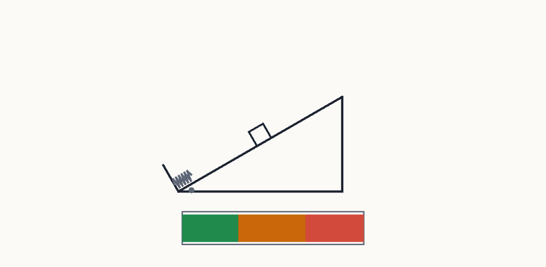
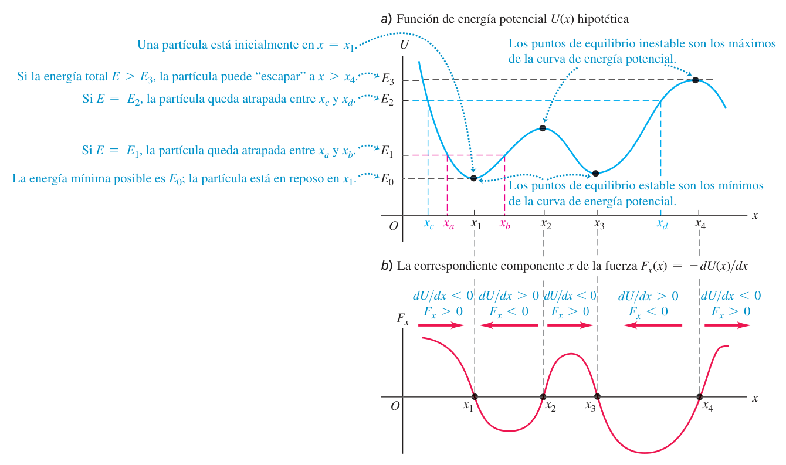
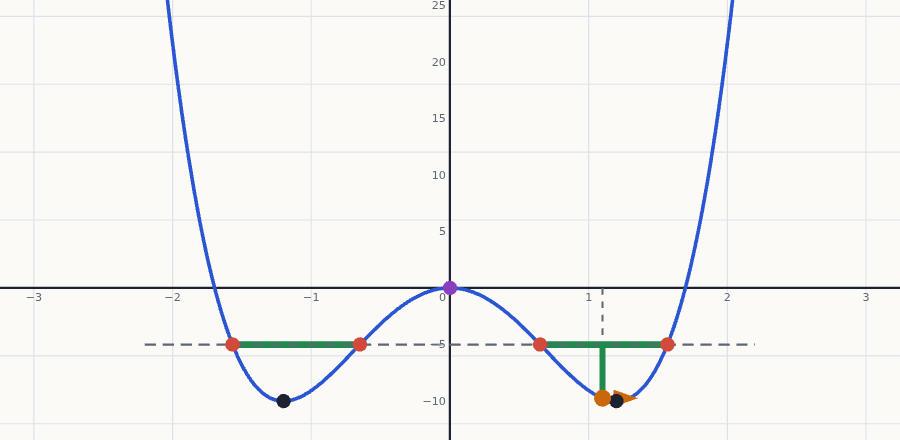

Energía potencial y conservación de la energía
En el tema 6 el trabajo se calculaba fuerza a fuerza (con una integral si la fuerza varía). Aquí aparece un atajo: si una fuerza es conservativa (el peso, el resorte), su trabajo se puede «guardar» como energía potencial y recuperar después. Con ella, la energía mecánica $K+U$ se conserva y los problemas de caídas, rampas, resortes y curvas se resuelven comparando solo el estado inicial y el final. Cuando hay fricción, lo perdido se contabiliza como trabajo de las «otras» fuerzas.
El tema en 5 minutos P
Una sola idea: el trabajo del peso y del resorte se puede «guardar» como energía potencial $U$ y recuperar después. Entonces no hace falta calcularlo fuerza a fuerza: basta comparar el estado inicial y el final con $K_1+U_1+W_{otras}=K_2+U_2$, donde $W_{otras}$ es el trabajo de lo demás (fricción, empujes). Si no hay «otras», la energía mecánica $E=K+U$ se conserva. Es el método de examen para rampas, caídas, resortes y curvas: une dos puntos sin tiempo ni aceleración.
Necesitas: el teorema trabajo-energía $W_{tot}=K_2-K_1$ y el trabajo del resorte (T6), la normal en una rampa $n=mg\cos\theta$ y $f_k=\mu_kn$ (T5), y para las secciones 4-5 la derivada como pendiente. U y el solucionario usan $g=9{,}80\ \text{m/s}^2$; si el enunciado da $9{,}81$, usa esa (los resultados apenas cambian).
El método en 5 pasos (úsalo siempre, en este orden)
Son las «Estrategias para resolver problemas 7.1 y 7.2» del libro. U p.207, 215
Las 6 fórmulas que hay que saber
| Fórmula | Cuándo se usa |
|---|---|
| $U_{grav}=mgy$, $\;W_{grav}=-\Delta U_{grav}$ | Hay alturas. Solo cuenta el desnivel, no la forma del camino. |
| $U_{el}=\tfrac12kx^2$ | Hay un resorte; $x$ desde la longitud natural (estirado o comprimido, igual). |
| $K_1+U_1+W_{otras}=K_2+U_2$ | El corazón del tema: todos los problemas de examen. Sin «otras», $E=K+U$ constante. |
| $W_f=-\mu_kn\,s$ ($n=mg\cos\theta$ en rampa) | Hay rozamiento: va en $W_{otras}$ y siempre resta. |
| $\Delta K+\Delta U+\Delta U_{int}=0$ | Teoría: «fuerzas conservativas y no conservativas», a dónde va la energía perdida. |
| $F_x=-\dfrac{dU}{dx}$ | Te dan $U(x)$ o una gráfica: fuerza, equilibrios (mínimo estable, máximo inestable), puntos de retorno. |
Qué cae en examen
Hay 8 preguntas de examen real de este tema: 4 problemas de 3 puntos, todos con el balance $K_1+U_1+W_{otras}=K_2+U_2$ (resorte que lanza un bloque por una rampa con fricción dos veces, X2-X3; carril con tramo rugoso y resorte, X1; cuarto de círculo con fricción, X4) y 4 preguntas de teoría de 4 puntos con sus cuestiones cortas («Fuerzas conservativas y no conservativas» dos veces, X5-X6; «Energía potencial gravitacional», X8; energía potencial gravitatoria y escape, X7, compartida con el tema 13). X ×8
Elige tu ruta
Esta página + lo marcado 🔴 imprescindible (secciones 1-3) + ejercicios del bloque «Núcleo».
Todo lo anterior + 🟡 conveniente (secciones 4-5) + bloque «Práctica» + las preguntas de teoría.
Chuleta, errores frecuentes, lista de comprobación y los 8 de examen sin mirar la solución.
¿?¿Qué tipo de problema es? 🔴 P
Lee el enunciado, busca la pista en la primera columna y ve directo al método y al ejercicio modelo.
| Si el enunciado dice… | Haz esto | Ejercicio modelo |
|---|---|---|
| «resorte comprimido» lanza un bloque por una rampa con fricción; «energía almacenada en el resorte» | $U_{el}=K_2+mgs\sin\theta+\mu_kmg\cos\theta\,s$: lo que queda + lo que se gana en altura + lo que se pierde. | X2, X3 |
| «desde una altura $h$», «tramo con rozamiento», «el resorte se comprime $x$»: ¿$\mu$? | Estado final = compresión máxima ($v=0$): $mgh=\mu mgL+\tfrac12kx^2$. | X1 |
| Arco, cuarto de círculo o cuenco con fricción, y luego un tramo recto | Balance por tramos con el punto común como bisagra; el trabajo de la fricción en la curva sale por diferencia. | X4 |
| «fuerza normal en el fondo», «aceleración en ese punto» | Energía para la rapidez; después Newton en ese punto ($n-mg=mv^2/R$). | E6, E7 |
| «rapidez máxima» | Escribe $K(x)$ y deriva: el máximo está donde la fuerza neta es cero ($kx=mg$ o $kx=f_k$). | E4, E5 |
| «sin fricción»: rampa, resorte, ¿hasta dónde sube? | Cadena de conversiones $\tfrac12kx^2=\tfrac12mv^2=mgh$; distancia sobre la rampa $h/\sin\theta$. | E2, E1 |
| «¿conservativa?», «¿se puede expresar con una energía potencial?», «¿cuánta energía eléctrica?» | Test del camino cerrado (¿trabajo nulo al volver?) y $\Delta K+\Delta U+\Delta U_{int}=0$. | X5, X6 |
| «cero de $U$», «signo de $U$ entre partículas», «¿escapa o vuelve?», $mgh$ frente a $-GMm/r$ | Cambiar el cero = sumar una constante; $U(r)=-W_{\infty\to r}$; diagrama $E$–$U$. | X6, X7, X8 |
| «Desarrolle el tema…» | Guion: idea → definición y ecuación → propiedades → ejemplo con números → error típico. | X5, X8 |
1Energía potencial gravitatoria y conservación de la energía 🔴 U p.204
Al subir un libro a una estantería haces trabajo contra el peso y el libro no gana rapidez: esa energía queda «guardada» en la posición, lista para convertirse en rapidez si cae. Es como ingresar dinero en una cuenta y retirarlo después. Cerca de la superficie, con $y$ medida hacia arriba:
$$U_{grav}=mgy\ \ \text{(7.2)}\qquad W_{grav}=mgy_1-mgy_2=-\Delta U_{grav}\ \ \text{(7.1, 7.3)}$$Al subir, $U_{grav}$ aumenta y el peso hace trabajo negativo; al bajar, $U_{grav}$ disminuye y el peso hace trabajo positivo. Ejemplo mínimo: un libro de 2,0 kg que baja 1,5 m pierde $\Delta U=-(2{,}0)(9{,}8)(1{,}5)=-29{,}4$ J y el peso hace $+29{,}4$ J.
U p.204
- La «altura cero» se elige donde quieras. Cambian $U_1$ y $U_2$, pero no su diferencia $mg(y_2-y_1)$, que es lo único con sentido físico. Eso sí: con $U=mgy$, $+y$ apunta hacia arriba.
- Es energía del sistema cuerpo-Tierra (depende de la interacción entre ambos), no «energía propia» del cuerpo.
Conservación de la energía mecánica 🔴
Juntando el teorema trabajo-energía $W_{grav}=K_2-K_1$ con $W_{grav}=U_1-U_2$:
$$K_1+U_{grav,1}=K_2+U_{grav,2}\qquad\text{(ec. 7.4)}$$Lo que pierde una forma lo gana la otra. Vale también si hay fuerzas que no trabajan (una normal perpendicular al movimiento). Ejemplo mínimo (ej. 7.1). Una pelota de 0,145 kg sale hacia arriba a 20,0 m/s: $\tfrac12mv_1^2=mgy_2\Rightarrow y_2=v_1^2/2g=20{,}4$ m ($K_1=U_2=29{,}0$ J); la masa se cancela. Y como la energía es un escalar, dos pelotas lanzadas con la misma rapidez y distinto ángulo llevan la misma rapidez a la misma altura (ej. conceptual 7.3).
U p.205-209Cuando otras fuerzas hacen trabajo 🔴
Si además del peso actúan la mano, un motor o la fricción, su trabajo $W_{otras}$ cambia la energía mecánica:
$$K_1+U_{grav,1}+W_{otras}=K_2+U_{grav,2}\qquad\text{(ecs. 7.6 y 7.7)}$$$W_{otras}\gt0$ (empujes): $E$ aumenta; $W_{otras}\lt0$ (fricción): $E$ disminuye. Ejemplo mínimo (ej. 7.2). La mano lanza la pelota anterior subiendo 0,50 m: con el origen en el punto de salida, $U_1=(0{,}145)(9{,}80)(-0{,}50)=-0{,}71$ J y $W_{otras}=(29{,}0-0)+(0+0{,}71)=29{,}7$ J, así que la mano empuja con $F=29{,}7/0{,}50\approx59$ N. A 15,0 m de altura, $K_3=29{,}0-21{,}3=7{,}7$ J y $v_3=10$ m/s, suba o baje.
U p.207-208Trayectorias curvas 🔴
En cada tramo $\Delta\vec s$ de una curva, $\vec w\cdot\Delta\vec s=-mg\,\Delta y$: el movimiento horizontal no cuenta. Sumando, $W_{grav}=-mg(y_2-y_1)$ por cualquier camino. Por eso el balance vale en rampas, columpios y toboganes mirando solo la diferencia de alturas. Ejemplo mínimo (ej. 7.4). Bajando sin fricción desde el reposo un cuarto de círculo de $R=3{,}00$ m: $v=\sqrt{2gR}=7{,}67$ m/s, igual que por cualquier rampa de 3,00 m de altura.
U p.209-210Energía si te dan o piden rapideces y posiciones (alturas, distancias, compresiones), sobre todo con caminos curvos o fuerzas variables. Newton si piden un tiempo, una aceleración o una fuerza en un punto. En el fondo del cuarto de círculo anterior la normal no sale de la energía: $n-mg=mv^2/R\Rightarrow n=3mg$ (método de E6).
U p.207, 210- Contar el peso dos veces: en $U_{grav}$ y en $W_{otras}$.
- Usar la distancia recorrida sobre la rampa $s$ como altura: la altura es $s\sin\theta$.
- Olvidar $W_{otras}$ cuando hay fricción, o darle signo positivo.
✍️ Comprueba que lo has entendido (2 min)
- Dejas caer una piedra de 0,50 kg desde 5,0 m. ¿Con qué rapidez llega al suelo? ¿Y si la lanzas a 3,0 m/s en cualquier dirección desde la misma altura? ($g=9{,}8$)
Ver respuesta
Caída: $v=\sqrt{2gh}=9{,}90$ m/s. Lanzada: $v=\sqrt{v_1^2+2gh}=\sqrt{9+98}=10{,}34$ m/s, sea cual sea la dirección (la energía es un escalar). La masa no interviene. - Un niño de 30 kg baja desde el reposo por un tobogán curvo de 2,5 m de altura y llega abajo a 5,0 m/s. ¿Qué trabajo hizo la fricción?
Ver respuesta
$W_{otras}=K_2-U_1=\tfrac12(30)(5{,}0)^2-(30)(9{,}8)(2{,}5)=375-735=-360$ J. Negativo, como debe ser. - Subes una mochila de 8 kg del suelo a una mesa de 0,75 m. ¿Cuánto cambia $U_{grav}$ con el origen en el suelo? ¿Y con el origen en la mesa?
Ver respuesta
En los dos casos $\Delta U=mg\Delta y=(8)(9{,}8)(0{,}75)=58{,}8$ J: de 0 a 58,8 J, o de $-58{,}8$ J a 0. Solo cambian los valores, no la diferencia.
2Energía potencial elástica 🔴 U p.212
Un resorte deformado es como un arco tensado: guarda el trabajo que costó deformarlo. Con $x$ medida desde la longitud natural ($x\gt0$ estirado, $x\lt0$ comprimido):
$$U_{el}=\tfrac12kx^2\ \ \text{(7.10)}\qquad W_{el}=\tfrac12kx_1^2-\tfrac12kx_2^2=-\Delta U_{el}\ \ \text{(7.11)}$$Nunca es negativa; estirar o comprimir lo mismo guarda lo mismo, y el doble de deformación guarda el cuádruple. Ejemplo mínimo (ej. 7.7). Un deslizador de 0,200 kg unido a un resorte de $k=5{,}00$ N/m se suelta estirado 0,100 m sin fricción. En $x=0{,}080$ m: $K=\tfrac12k(0{,}100^2-0{,}080^2)=0{,}0090$ J y $v=\sqrt{2K/m}=0{,}30$ m/s.
U p.212-215
0); U_el nunca es negativa." style="max-width:min(100%,300px)" loading="lazy">Con la gravedad pones $y=0$ donde quieras; con el resorte, $x=0$ tiene que ser la longitud natural (ahí fuerza y energía son nulas). Y $\tfrac12kx_1^2-\tfrac12kx_2^2$ no es $\tfrac12k(x_1-x_2)^2$: la energía no es lineal en $x$. Pasa siempre los cm a m.
U p.213Si solo trabaja el resorte, $K+U_{el}$ es constante (7.12). En el caso general (peso, resorte y otras fuerzas):
$$K_1+U_{grav,1}+U_{el,1}+W_{otras}=K_2+U_{grav,2}+U_{el,2}\ \ \text{(7.13)}\quad\Longleftrightarrow\quad K_1+U_1+W_{otras}=K_2+U_2\ \ \text{(7.14)}$$(resorte de masa despreciable). Ejemplo mínimo (ej. 7.8). El deslizador anterior parte del reposo en $x=0$ y lo empujas con 0,610 N hasta $x=0{,}100$ m: $K_2=W_{otras}-U_{el,2}=0{,}0610-0{,}0250=0{,}0360$ J y $v=0{,}60$ m/s (sin resorte serían 0,78 m/s: el resorte, al estirarse, hace trabajo negativo).
U p.213-216Un ascensor de 2000 kg llega a 4,00 m/s a un resorte amortiguador; un freno le aplica 17 000 N de fricción y el resorte lo para tras comprimirse 2,00 m. ¿$k$?
- Origen en el contacto, $+y$ arriba: $y_2=-2{,}00$ m. $K_1=16\,000$ J, $U_1=0$, $K_2=0$, $W_{otras}=-(17\,000)(2{,}00)=-34\,000$ J.
- $U_2=mgy_2+\tfrac12ky_2^2=-39\,200+2k$. Balance: $16\,000-34\,000=-39\,200+2k\Rightarrow k=1{,}06\times10^4$ N/m.
Lo nuevo: por debajo del origen $U_{grav}\lt0$, por eso $\tfrac12ky_2^2=21\,200$ J puede superar la energía inicial. En E7 se calculan su rapidez y su aceleración a 1,00 m.
U p.216-217✍️ Comprueba que lo has entendido (2 min)
- Un resorte de $k=500$ N/m se comprime 4,0 cm. ¿Qué energía guarda? ¿Y si se comprime 8,0 cm?
Ver respuesta
$U=\tfrac12(500)(0{,}040)^2=0{,}40$ J; con 8,0 cm, $1{,}6$ J: doble deformación, cuádruple energía. - Ese resorte (0,40 J) lanza un bloque de 0,20 kg por una mesa sin fricción. ¿Con qué rapidez sale?
Ver respuesta
$\tfrac12mv^2=0{,}40\Rightarrow v=\sqrt{2(0{,}40)/0{,}20}=2{,}0$ m/s. - Un bloque de 0,50 kg cae desde 0,30 m por encima de un resorte vertical de $k=200$ N/m. ¿Compresión máxima $x$? ($g=9{,}8$)
Ver respuesta
Del reposo arriba al reposo abajo, el bloque baja $0{,}30+x$: $mg(0{,}30+x)=\tfrac12kx^2\Rightarrow100x^2-4{,}9x-1{,}47=0$, raíz positiva $x=0{,}148$ m. No olvides la $x$ en la altura bajada.
3Fuerzas conservativas y no conservativas 🔴 U p.217
Con el peso y el resorte la energía que «prestas» se recupera entera: la pelota vuelve a la mano con la misma rapidez, el deslizador rebota igual de rápido. Es un depósito del que puedes retirar todo lo ingresado. El trabajo de una fuerza conservativa:
- se escribe como diferencia de una energía potencial: $W=U_1-U_2=-\Delta U$;
- es reversible;
- es independiente de la trayectoria: solo depende de los extremos;
- es cero en una trayectoria cerrada.
Ejemplos: el peso, el resorte ideal, la gravitación, la fuerza eléctrica. Si solo trabajan ellas, $E=K+U$ es constante.
U p.217-218
La fricción cinética siempre se opone al movimiento: trabaja en negativo a la ida y a la vuelta, así que su trabajo depende del camino y no tiene energía potencial. Si hace perder energía mecánica es disipativa (fricción, resistencia del aire); otras no conservativas la aumentan (un petardo que explota).
Ejemplo mínimo (ej. 7.10). Arrastras un sillón de 40,0 kg ($\mu_k=0{,}200$) entre dos puntos a 2,50 m: en línea recta haces $\mu_kmg\,s=196$ J; rodeando por dos tramos de 2,00 y 1,50 m, 274 J. Mismos extremos, distinto trabajo: no conservativa. Prueba rápida (ej. 7.11): si el trabajo en un camino cerrado no es cero (p. ej. $\vec F=Cx\,\hat\jmath$ en una espira cuadrada de lado $L$ da $CL^2$), la fuerza no es conservativa.
U p.218-219Lo que quita la fricción no desaparece: calienta los cuerpos, es energía interna, con $\Delta U_{int}=-W_{otras}$. Llevado a (7.14):
$$\Delta K+\Delta U+\Delta U_{int}=0\qquad\text{(ec. 7.15)}$$La energía nunca se crea ni se destruye, solo cambia de forma: la mecánica puede perderse, la total no. Ejemplo mínimo (ej. conceptual 7.12). Throcky (25,0 kg) baja una rampa curva de 3,00 m de altura y llega a 6,00 m/s: $\Delta K=+450$ J, $\Delta U=-735$ J y la fricción hace $-285$ J, así que $\Delta U_{int}=+285$ J y $450-735+285=0$.
U p.220
- Decir «la energía no se conserva» cuando hay fricción: se conserva la energía total; lo que baja es la energía mecánica $K+U$, que se convierte en energía interna.
- Querer escribir una energía potencial de la fricción: no existe, porque su trabajo depende del camino. Se cuenta como $W_{otras}=-f_ks$ (con $s$ la longitud recorrida, no el desplazamiento neto).
- Aplicar $K_1+U_1=K_2+U_2$ (sin $W_{otras}$) cuando hay fricción o una fuerza que trabaja.
- Contar dos veces el trabajo del peso o del resorte: una vez en $U$ y otra en $W_{otras}$.
✍️ Comprueba que lo has entendido (2 min)
- Llevas una caja de 10 kg ($\mu_k=0{,}30$) 4,0 m por el suelo y la devuelves al punto de partida. ¿Trabajo de la fricción y del peso en el viaje completo?
Ver respuesta
Fricción: $-\mu_kmg\,s=-(0{,}30)(10)(9{,}8)(8{,}0)=-235$ J ($s=8$ m recorridos, no desplazamiento nulo). Peso: 0. Camino cerrado con trabajo no nulo ⇒ la fricción no es conservativa. - Un bloque baja por una rampa con fricción: $\Delta K=+20$ J y $\Delta U=-50$ J. ¿Cuánto vale $\Delta U_{int}$? ¿Y el trabajo de la fricción?
Ver respuesta
$\Delta U_{int}=-(\Delta K+\Delta U)=30$ J y $W_f=-\Delta U_{int}=-30$ J. - Una fuerza hace +5 J entre A y B por un camino y +3 J por otro. ¿Puede ser conservativa?
Ver respuesta
No: depende del camino. Además, ida por el primero y vuelta por el segundo da $5-3=2$ J $\neq0$ en un camino cerrado.
4Fuerza y energía potencial 🟡 U p.221
Piensa en $U(x)$ como el perfil de una montaña: una canica rueda cuesta abajo y empuja más donde la pendiente es mayor. De $F_x\Delta x=-\Delta U$, en el límite:
$$F_x(x)=-\frac{dU(x)}{dx}\qquad\text{(ec. 7.16)}$$Ejemplo mínimo. Gravedad: $U=mgy\Rightarrow F_y=-mg$. Resorte: $U=\tfrac12kx^2\Rightarrow F_x=-kx$, siempre hacia $x=0$ (fuerza restauradora). Repulsión eléctrica (ej. 7.13): $U=C/x\Rightarrow F_x=C/x^2\gt0$.
U p.221-222Cada componente es la derivada parcial (las otras coordenadas, constantes):
$$F_x=-\frac{\partial U}{\partial x},\ F_y=-\frac{\partial U}{\partial y},\ F_z=-\frac{\partial U}{\partial z}\ \ \text{(7.17)}\qquad\vec F=-\vec\nabla U\ \ \text{(7.18)}$$Ejemplo mínimo (ej. 7.14). $U=\tfrac12k(x^2+y^2)\Rightarrow\vec F=-k(x\,\hat\imath+y\,\hat\jmath)=-k\vec r$: hacia el origen, de módulo $kr$, como un resorte fijo en el origen.
U p.222-223Lo decide el signo de $-dU/dx$, no el de $U$. Por eso sumar una constante a $U$ no cambia nada, pero desplazar la variable (usar $\tfrac12k(x-x_1)^2$ en lugar de $\tfrac12kx^2-\tfrac12kx_1^2$) sí cambia la fuerza (cuestión de X6).
U p.225✍️ Comprueba que lo has entendido (2 min)
- $U(x)=5x^2+2$ (J, con $x$ en m). ¿Fuerza en $x=0{,}30$ m? ¿Importa el «+2»?
Ver respuesta
$F_x=-dU/dx=-10x=-3{,}0$ N (hacia $x=0$). El +2 no importa: la derivada de una constante es cero. - $U(x,y)=3x^2y$ (J). ¿Fuerza en el punto (1, 2) m?
Ver respuesta
$F_x=-6xy=-12$ N, $F_y=-3x^2=-3$ N; módulo $\sqrt{12^2+3^2}=12{,}4$ N. - Dos cargas iguales tienen $U(x)=C/x$ con $C=2{,}0$ J·m. ¿Fuerza en $x=0{,}50$ m y sentido?
Ver respuesta
$F_x=C/x^2=2{,}0/0{,}25=8{,}0$ N, positiva: se repelen.
5Diagramas de energía 🟡 U p.224
Dibuja $U(x)$ y una línea horizontal a la altura de $E$, como el nivel del agua en un paisaje. Como $K=E-U\ge0$, la partícula solo está donde la curva queda por debajo de la línea; la distancia vertical entre ambas es $K$. Donde se cortan ($U=E$, $K=0$) están los puntos de retorno: se para y da la vuelta. Entre dos puntos de retorno hay un pozo de potencial.
Ejemplo mínimo. El deslizador con resorte oscila entre $x=-A$ y $x=+A$: $K$ máxima en $x=0$ y nula en los extremos.
U p.224-225Equilibrio donde $F_x=-dU/dx=0$. Un mínimo de $U$ es estable (si te apartas, la fuerza te devuelve); un máximo es inestable (la fuerza te aleja). Si $E$ supera la barrera de un lado y la curva sigue bajando fuera, la partícula escapa; si no, queda atrapada.
U p.225

- Traza la línea $E$ y marca dónde corta a $U(x)$: puntos de retorno; la partícula vive donde $U\lt E$.
- ¿Pasa $E$ por encima de un máximo y la curva vuelve a bajar fuera? Puede escapar por ese lado (método de X7).
- $K$ es la distancia vertical entre $E$ y $U$; la fuerza apunta hacia donde $U$ baja y es cero en mínimos y máximos.
✍️ Comprueba que lo has entendido (2 min)
- $U(x)=x^3-3x$ (J, con $x$ en m). ¿Dónde hay equilibrio y de qué tipo?
Ver respuesta
$dU/dx=3x^2-3=0\Rightarrow x=\pm1$ m. En $x=1$, mínimo ($U=-2$ J): estable. En $x=-1$, máximo ($U=+2$ J): inestable. - En esa curva, una partícula con $E=0$ está en $x=1$ m. ¿Cuánto vale su $K$ allí y entre qué puntos se mueve?
Ver respuesta
$K=E-U=0-(-2)=2$ J. Puntos de retorno donde $x^3-3x=0$: $x=0$ y $x=\sqrt3=1{,}73$ m; se mueve entre ellos. - Deslizador de 0,200 kg con un resorte de $k=5{,}00$ N/m que oscila con amplitud 0,100 m sin fricción. ¿Rapidez máxima y dónde?
Ver respuesta
En $x=0$, donde $U$ es mínima: $K_{max}=E=\tfrac12kA^2=0{,}025$ J y $v_{max}=\sqrt{2(0{,}025)/0{,}200}=0{,}50$ m/s.
6Ejercicios resueltos
Las 8 preguntas de examen real (X1-X8) están todas aquí, completas: los cuatro problemas en el «Núcleo» y las cuatro preguntas de teoría en su propio bloque. Las acompañan tres ejercicios del solucionario con métodos que el examen todavía no ha pedido pero que el libro trabaja mucho (normal en el fondo de una curva y rapidez máxima). Ordenados por método, no por fuente. Intenta resolver tú antes de abrir la solución. Cada ejercicio termina con su receta.
| Ejercicio | Qué tipo es | Método que te llevas |
|---|---|---|
| X2 · Feb 2022 | Resorte que lanza un bloque por una rampa con fricción | $U_{el}=K_2+mgs\sin\theta+\mu_kmg\cos\theta\,s$: lo que queda + altura ganada + lo disipado |
| X3 · Sep 2024 | El mismo problema con otros datos ($g=9{,}81$) | Idéntico a X2: la fricción actúa en todo el recorrido, desde la posición inicial |
| X1 · Feb 2020 | Carril con tramo rugoso y resorte: ¿$\mu$? | Estado final = compresión máxima ($v=0$): $mgh=\mu mgL+\tfrac12kx^2$ |
| X4 · Sep 2023 | Cuarto de círculo con fricción + tramo recto | Balance por tramos con bisagra en B; $\mu_k=v^2/(2gs)$ y la fricción del arco por diferencia |
| E6 | Normal en el fondo de una curva | Energía para $v$; luego Newton radial: $n-mg=mv^2/R$ |
| E4 | Rapidez máxima con resorte vertical | $K(y)=mgy-\tfrac12ky^2$, $dK/dy=0\Rightarrow ky=mg$ (fuerza neta nula) |
| E5 | Rapidez máxima con resorte y fricción | El máximo no está en la longitud natural, sino donde $kx=f_k$ |
X2 — Bloque lanzado por un resorte en un plano inclinado de 30° con fricción 🔴 examen real X
Un bloque sólido de 1,50 kg de masa se coloca contra un resorte comprimido en la base de un plano inclinado de pendiente 30° (punto A). Al soltarse el resorte, el bloque sube por el plano. En el punto B, a 6,0 m pendiente arriba de A, el bloque tiene una velocidad de 7 m/s dirigida pendiente arriba y ya no está en contacto con el resorte. El coeficiente de fricción cinética entre el bloque y la superficie del plano es $\mu_k=0{,}50$. La masa del resorte es despreciable. Calcule la energía potencial almacenada inicialmente en el resorte. (3 puntos.) = E 7.73
- Estados. 1 = A (reposo contra el resorte comprimido): $K_A=0$, $U_A=U_{el,A}$ (la incógnita), $y_A=0$. 2 = B: $v_B=7$ m/s, resorte ya relajado y sin contacto, $y_B=s\sin30^\circ=6{,}0\cdot0{,}5=3{,}0$ m.
- ¿Por qué no hace falta saber cuánto se comprimió ni su $k$? Porque la fuerza del resorte es conservativa: todo su trabajo está contenido en $U_{el,A}$ (§7.2). Solo importa la energía total almacenada.
- Fricción. Perpendicular al plano no hay aceleración: $n=mg\cos30^\circ$ y $f_k=\mu_kmg\cos30^\circ$ (no $\mu_kmg$). Actúa durante los 6,0 m completos (también mientras el resorte empuja): $W_{otras}=-\mu_kmg\cos30^\circ\,s$.
- Balance (7.14): $U_{el,A}+W_{otras}=K_B+U_{grav,B}\ \Rightarrow\ U_{el,A}=\tfrac12mv_B^2+mgs\sin\theta+\mu_kmg\cos\theta\,s$.
- Números ($g=9{,}8$): $K_B=\tfrac12(1{,}50)(7)^2=36{,}75$ J; $U_{grav,B}=(1{,}50)(9{,}8)(3{,}0)=44{,}10$ J; $|W_f|=(0{,}50)(1{,}50)(9{,}8)(0{,}866)(6{,}0)=38{,}19$ J. Suma: $U_{el,A}=36{,}75+44{,}10+38{,}19=119{,}04$ J.
- Lectura física. La energía del resorte se reparte en tres «cuentas»: cinética en B (31 %), potencial gravitatoria (37 %) y energía interna por fricción (32 %).
Resultado: $U_{el,A}\approx119$ J (con $g=9{,}81$: 119,1 J).
X3 — Mismo planteamiento con rampa de 25° (g = 9,81) 🔴 examen real X
Un bloque de 1,5 kg de masa se coloca contra un muelle que se encuentra comprimido en la base de una rampa de 25°. Al liberar el muelle, el bloque sube por la pendiente por la acción de éste de forma que cuando lleva recorridos 5 m el módulo de su velocidad es de 6 m/s. En ese momento el bloque ya no está en contacto con el muelle. El coeficiente de fricción cinética entre el bloque y la pendiente es de $\mu_k=0{,}4$. Considere además que la masa del muelle es despreciable. Obtenga el valor de la energía potencial almacenada inicialmente en el muelle. Considere: $g=9{,}81\ \text{m/s}^2$. (3 puntos.)
- Estados. 1 = base de la rampa (reposo, muelle comprimido, $y_1=0$). 2 = tras recorrer $s=5$ m: $v_2=6$ m/s, $y_2=s\sin25^\circ$.
- Fuerzas. Peso y muelle van en $U$; la normal ($n=mg\cos25^\circ$) no trabaja; la fricción $f_k=\mu_kmg\cos25^\circ$ es la única «otra» fuerza y actúa a lo largo de los 5 m desde la posición inicial.
- Balance (7.14): $U_{el,1}-\mu_kmg\cos\theta\,s=\tfrac12mv_2^2+mgs\sin\theta$.
- Números: $\tfrac12mv_2^2=\tfrac12(1{,}5)(36)=27{,}00$ J; $mgs\sin25^\circ=(1{,}5)(9{,}81)(5)(0{,}4226)=31{,}09$ J; $\mu_kmg\cos25^\circ\,s=(0{,}4)(1{,}5)(9{,}81)(0{,}9063)(5)=26{,}67$ J.
- $U_{el,1}=27{,}00+31{,}09+26{,}67=84{,}77$ J.
Resultado: $U_{el}\approx84{,}8$ J.
X1 — Carril con tramo rugoso y resorte final: coeficiente de rozamiento 🔴 examen real X
Sea un bloque de 5 kg de masa que se deja deslizar, partiendo del reposo, desde el punto A de un carril a una altura $h=4$ m según la figura. El carril consta de tres tramos de los cuales sólo existe rozamiento en el tramo BC de 5 m de longitud. Al final del trayecto, en el tramo CD se encuentra un resorte cuya constante elástica es $k=400$ N/m. Cuando el bloque alcance el punto D, el resorte se ha comprimido 25 cm. Suponiendo que el choque entre la masa y el resorte es perfectamente elástico, calcular el coeficiente de rozamiento dinámico en el tramo BC. (3 puntos.)
- Cómo leer el enunciado. «El resorte se ha comprimido 25 cm cuando el bloque alcanza D» significa que D es el punto de compresión máxima: allí el bloque se detiene un instante, $v_D=0$. «Choque perfectamente elástico» quiere decir que al tocar el resorte no se pierde energía mecánica: toda la cinética se almacena como $\tfrac12kx^2$. No se da $g$: se usa 9,8 m/s².
- Estados y origen. Estado 1 = A (reposo, $y_A=h=4$ m); estado 2 = D (reposo, $y_D=0$, resorte comprimido $x=0{,}25$ m). Origen de alturas en el tramo horizontal.
- Energías. $K_1=0$, $U_1=mgh$; $K_2=0$, $U_2=\tfrac12kx^2$ ($U_{grav,2}=0$).
- Otras fuerzas. Solo hay fricción en BC (la normal no trabaja en ningún tramo). En el tramo horizontal $n=mg$, así que $f_k=\mu mg$ y $W_{otras}=-\mu mg\,L$ con $L=5$ m. En AB y CD no hay fricción.
- Balance (7.14): $mgh-\mu mgL=\tfrac12kx^2\ \Rightarrow\ \mu=\dfrac{mgh-\tfrac12kx^2}{mgL}=\dfrac hL-\dfrac{kx^2}{2mgL}$.
- Números: $mgh=5\cdot9{,}8\cdot4=196$ J; $\tfrac12kx^2=\tfrac12\cdot400\cdot0{,}25^2=12{,}5$ J; $mgL=5\cdot9{,}8\cdot5=245$ J. $\mu=\dfrac{196-12{,}5}{245}=\dfrac{183{,}5}{245}=0{,}749$.
- Comprobación. Con $g=9{,}81$ sale lo mismo ($0{,}749$) porque el término dominante $h/L=0{,}8$ no depende de $g$. El valor es alto pero posible: casi toda la energía (183,5 de 196 J) se disipa en BC.
Resultado: $\mu\approx0{,}75$.
X4 — Cuarto de círculo con fricción y tramo horizontal: μk y trabajo de la fricción 🔴 examen real X
Una partícula de masa 0,5 kg que se encuentra en reposo se suelta desde una posición A, que forma un cuarto de círculo de radio $R=2{,}1$ m según se muestra en la figura, deslizándose hasta llegar al punto B con una velocidad de 5,2 m/s. A partir de este punto, la partícula se desplaza sobre una superficie horizontal hasta el punto C situado a 5 m, donde se detiene. Calcular (a) el coeficiente de fricción cinética de la superficie horizontal y (b) el trabajo de la fuerza de rozamiento sobre la partícula al deslizarse desde el punto A al B. (3 puntos.)
- Método. En el tramo curvo la normal y la fricción cambian punto a punto: Newton sería muy difícil. Con energía solo necesitamos los extremos de cada tramo (Estrategia 7.1). Se usa B como «bisagra» entre los dos tramos. No se da $g$: se usa 9,80 (con 9,81 los resultados apenas cambian).
- (a) Tramo BC. Estado 1 = B ($v_B=5{,}2$ m/s), estado 2 = C ($v_C=0$), mismo nivel ($U_1=U_2$). Sobre la superficie horizontal $n=mg$, luego $f_k=\mu_kmg$ y $W_{otras}=-\mu_kmg\,s$.
- Balance $K_B+W_{otras}=K_C$: $\tfrac12mv_B^2-\mu_kmgs=0\Rightarrow\mu_k=\dfrac{v_B^2}{2gs}=\dfrac{(5{,}2)^2}{2(9{,}8)(5)}=\dfrac{27{,}04}{98}=0{,}276$. La masa se cancela.
- (b) Tramo AB. Origen en B: $y_A=R=2{,}1$ m, $y_B=0$; $K_A=0$. La normal no trabaja (es perpendicular a la trayectoria en cada punto); la única «otra» fuerza es la fricción: $W_{otras}=W_f^{AB}$.
- (7.14): $0+mgR+W_f^{AB}=\tfrac12mv_B^2+0\Rightarrow W_f^{AB}=\tfrac12mv_B^2-mgR=6{,}76-10{,}29=-3{,}53$ J (con $g=9{,}81$: $-3{,}54$ J). $\tfrac12mv_B^2=\tfrac12(0{,}5)(27{,}04)=6{,}76$ J y $mgR=(0{,}5)(9{,}8)(2{,}1)=10{,}29$ J.
- Comprobación de sentido. Sin fricción llegaría a B con $\sqrt{2gR}=6{,}42$ m/s $>5{,}2$ m/s: coherente con que la fricción haya quitado energía. Y en BC la fricción retira los 6,76 J que tenía en B.
Resultado: (a) $\mu_k\approx0{,}28$; (b) $W_f^{AB}\approx-3{,}5$ J.
E6 — Problema 7.9: piedra en un cuenco con fricción (energía + Newton) 🔴 E
Una piedra pequeña de 0,20 kg se suelta desde el reposo en el punto A, en el borde de un cuenco hemisférico de radio $R=0{,}50$ m. Desliza (no rueda) y la fricción realiza un trabajo de 0,22 J en módulo al ir de A al fondo B. (a) Entre A y B, ¿qué trabajo realizan (i) la normal y (ii) la gravedad? (b) ¿Qué rapidez tiene en B? (c) ¿Cuáles de las tres fuerzas son constantes? (d) ¿Cuánto vale la normal en B?
- (a)(i) La normal es radial y la velocidad tangente: $W_n=0$.
- (a)(ii) Origen en B: $W_{grav}=U_A-U_B=mgR=(0{,}20)(9{,}8)(0{,}50)=0{,}98$ J (vale para trayectoria curva).
- (b) $W_{tot}=0+0{,}98-0{,}22=0{,}76$ J $=\tfrac12mv_B^2\Rightarrow v_B=\sqrt{2(0{,}76)/0{,}20}=2{,}76$ m/s (sin fricción: $\sqrt{2gR}=3{,}13$ m/s).
- (c) Solo el peso es constante. La normal cambia en módulo y dirección (vale 0 en A, donde la pared es vertical y $v=0$, y es máxima en B); la fricción $f_k=\mu_kn$ cambia con ella y también de dirección.
- (d) En B el movimiento es circular y la aceleración centrípeta apunta hacia arriba, $a_{rad}=v_B^2/R$: $\sum F_y=n-mg=mv_B^2/R\Rightarrow n=m\left(g+\dfrac{v_B^2}{R}\right)=0{,}20\left(9{,}8+\dfrac{7{,}6}{0{,}50}\right)=5{,}0$ N (2,6 veces el peso, 1,96 N).
Resultado: (a) 0 J y 0,98 J; (b) 2,76 m/s; (c) solo el peso; (d) $n=5{,}0$ N.
E4 — Problema 7.67: pez colgado de un resorte vertical (rapidez máxima) 🔴 E
Un pez de 3,00 kg cuelga del extremo inferior de un resorte vertical de masa despreciable y $k=900$ N/m. Inicialmente el resorte no está estirado ni comprimido y el pez se suelta desde el reposo. (a) ¿Qué rapidez tiene tras descender 0,0500 m? (b) ¿Cuál es su rapidez máxima durante la bajada?
- Solo trabajan el peso y el resorte (conservativos): $K+U_{grav}+U_{el}=\text{cte}$.
- Sea $y$ la distancia descendida (positiva hacia abajo): $U_{grav}$ baja $mgy$ y el resorte se estira $y$, luego $K(y)=mgy-\tfrac12ky^2$.
- (a) $K(0{,}0500)=(3{,}00)(9{,}8)(0{,}0500)-\tfrac12(900)(0{,}0500)^2=1{,}470-1{,}125=0{,}345$ J $\Rightarrow v=\sqrt{2(0{,}345)/3{,}00}=0{,}480$ m/s.
- (b) $K$ es máxima donde $dK/dy=0$: $mg-ky=0\Rightarrow y^*=mg/k=0{,}0327$ m. Es el punto de equilibrio, donde la fuerza neta es nula y el pez deja de acelerar (equivale a $F=-dU/dy=0$, el mínimo de $U$ total; §7.4-7.5).
- $K_{max}=mgy^*-\tfrac12ky^{*2}=\dfrac{(mg)^2}{2k}=0{,}480$ J $\Rightarrow v_{max}=0{,}566$ m/s.
- Comprobación: $v_{max}>0{,}480$ m/s del apartado (a), como debe ser; el pez se detiene en $y=2y^*=0{,}0653$ m.
Resultado: (a) 0,480 m/s; (b) 0,566 m/s en $y=0{,}0327$ m.
E5 — Problema 7.65: caja contra un resorte con fricción (rapidez máxima) 🟡 E
En un sistema de manejo de paquetes, una caja de 1,60 kg se coloca contra un resorte ligero comprimido 0,280 m, con $k=45{,}0$ N/m. Se suelta desde el reposo y se mueve sobre una superficie horizontal con $\mu_k=0{,}300$. Tras recorrer 0,280 m el resorte alcanza su longitud natural y la caja se separa. (a) ¿Qué rapidez tiene al separarse? (b) ¿Cuál es su rapidez máxima durante el movimiento?
- Igual que E3: $\tfrac12mv^2=U_{el,1}-U_{el,2}-\mu_kmg\,d$, con $d$ la distancia recorrida.
- (a) $d=0{,}280$ m, $U_{el,2}=0$: $U_{el,1}=\tfrac12(45{,}0)(0{,}280)^2=1{,}764$ J; $W_f=-(0{,}300)(1{,}60)(9{,}8)(0{,}280)=-1{,}317$ J; $K=0{,}447$ J $\Rightarrow v=0{,}747$ m/s.
- (b) En función de $d$: $v^2(d)=\dfrac2m\left[\tfrac12kx_0^2-\tfrac12k(x_0-d)^2-\mu_kmg\,d\right]$. Máximo: $\dfrac{d(v^2)}{dd}=0\Rightarrow k(x_0-d)=\mu_kmg$: la rapidez es máxima cuando la fuerza del resorte iguala a la de fricción (aceleración nula).
- Compresión en ese punto: $x_0-d=\mu_kmg/k=(0{,}300)(1{,}60)(9{,}8)/45{,}0=0{,}105$ m ($d=0{,}175$ m). Sustituyendo: $v_{max}=0{,}931$ m/s. Después la fricción supera al resorte y la caja frena, por eso se separa a 0,747 m/s.
Resultado: (a) 0,747 m/s; (b) 0,931 m/s con el resorte comprimido 0,105 m.
E1 — Problema 7.6: caja que baja por una rampa sin fricción 🟡 E
Una caja de masa $M$ parte del reposo en lo alto de una rampa sin fricción inclinada un ángulo $\alpha$ y baja una distancia $d$ medida sobre la rampa. Calcule su rapidez al llegar abajo de dos maneras: (a) con el cero de energía potencial en la base y $+y$ hacia arriba; (b) con el cero en la cima y $+y$ hacia arriba. (c) ¿Por qué no interviene la fuerza normal?
- Fuerzas: peso (conservativo) y normal. La normal es perpendicular al desplazamiento: $W_n=0$ (apartado c). Solo trabaja la gravedad, luego $K_1+U_1=K_2+U_2$ (7.4).
- Bajar $d$ por la rampa es bajar $d\sin\alpha$ en vertical.
- (a) Cero en la base: $y_1=d\sin\alpha$, $y_2=0$. $0+Mgd\sin\alpha=\tfrac12Mv_2^2+0\Rightarrow v_2=\sqrt{2gd\sin\alpha}$.
- (b) Cero en la cima: $y_1=0$, $y_2=-d\sin\alpha$. $0+0=\tfrac12Mv_2^2-Mgd\sin\alpha\Rightarrow v_2=\sqrt{2gd\sin\alpha}$, el mismo resultado: solo importa $\Delta U$, no el valor absoluto.
Resultado: $v=\sqrt{2gd\sin\alpha}$, independiente de $M$ y del origen elegido.
E2 — Problema 7.40: bloque lanzado por un resorte sobre un plano horizontal y una rampa 🟡 E
Un bloque de 2,00 kg se empuja contra un resorte de masa despreciable y $k=400$ N/m, comprimiéndolo 0,220 m. Al soltarlo, el bloque se mueve por una superficie sin fricción, primero horizontal y luego por una rampa de 37,0°. (a) ¿Qué rapidez tiene en el tramo horizontal tras separarse del resorte? (b) ¿Hasta dónde sube por la rampa antes de detenerse y volver?
- Sin fricción: solo trabajan fuerzas conservativas (resorte y peso), $K_1+U_1=K_2+U_2$ (7.12).
- (a) Estado 1: reposo, $U_{el}=\tfrac12kx^2=\tfrac12(400)(0{,}220)^2=9{,}68$ J. Estado 2: resorte relajado, tramo horizontal: $\tfrac12kx^2=\tfrac12mv^2\Rightarrow v=x\sqrt{k/m}=0{,}220\sqrt{200}=3{,}11$ m/s.
- (b) Estado 3: el punto más alto, $v=0$. Toda la energía es gravitatoria: $\tfrac12kx^2=mgh\Rightarrow h=\dfrac{9{,}68}{(2{,}00)(9{,}80)}=0{,}494$ m de altura.
- Distancia a lo largo de la rampa: $L=h/\sin37{,}0^\circ=\dfrac{9{,}68}{(2{,}00)(9{,}80)(0{,}6018)}=0{,}821$ m.
Resultado: (a) 3,11 m/s; (b) sube 0,821 m por la rampa (0,494 m de altura).
E3 — Problema 7.24: bloque con resorte y fricción en un suelo horizontal 🟡 E
Un bloque de 2,50 kg sobre un suelo horizontal está unido a un resorte horizontal inicialmente comprimido 0,0300 m, con $k=840$ N/m. El coeficiente de fricción cinética es $\mu_k=0{,}40$. Se sueltan desde el reposo. ¿Qué rapidez tiene el bloque tras recorrer 0,0200 m (el resorte queda comprimido 0,0100 m)?
- Fuerzas: el resorte (conservativo, en $U_{el}$); peso y normal (no trabajan en un movimiento horizontal); la fricción (no conservativa, va en $W_{otras}$).
- $U_1=\tfrac12(840)(0{,}0300)^2=0{,}378$ J; $U_2=\tfrac12(840)(0{,}0100)^2=0{,}0420$ J. Como el bloque está unido, en el estado 2 el resorte aún guarda energía.
- $n=mg$ y $W_f=-\mu_kmg\,s=-(0{,}40)(2{,}50)(9{,}8)(0{,}0200)=-0{,}196$ J.
- (7.14): $K_2=U_1+W_f-U_2=0{,}378-0{,}196-0{,}042=0{,}140$ J, y $v_2=\sqrt{2K_2/m}=\sqrt{2(0{,}140)/2{,}50}=0{,}335$ m/s. (Sin fricción serían 0,518 m/s.)
Resultado: $v=0{,}335$ m/s.
E7 — Problema 7.22: ascensor con freno y resorte (rapidez y aceleración a 1,00 m) 🟡 E
(a) ¿Qué rapidez tiene el ascensor del ejemplo 7.9 de U (2000 kg, llega a 4,00 m/s a un resorte amortiguador con $k=1{,}06\times10^4$ N/m y un freno de fricción constante de 17 000 N) después de haber bajado 1,00 m desde el contacto con el resorte? (b) ¿Qué aceleración tiene en ese momento?
- Estados. 1: contacto con el resorte, $y_1=0$, $v_1=4{,}00$ m/s, resorte sin comprimir. 2: $y_2=-1{,}00$ m.
- $K_1=\tfrac12(2000)(4{,}00)^2=16\,000$ J; $U_1=0$. $W_{otras}=-f|y_2|=-17\,000$ J (la fricción se opone al movimiento hacia abajo). $U_2=mgy_2+\tfrac12ky_2^2=-19\,600+5300=-14\,300$ J.
- (7.14): $16\,000-17\,000=K_2-14\,300\Rightarrow K_2=13\,300$ J $\Rightarrow v_2=\sqrt{2(13\,300)/2000}=3{,}65$ m/s.
- (b) La energía no da la aceleración: hay que usar Newton en ese instante (positivo hacia arriba): fricción $+17\,000$ N (el ascensor baja, la fricción sube), resorte $+ky=+10\,600$ N, peso $-19\,600$ N. $\sum F=8000$ N $\Rightarrow a=8000/2000=4{,}00$ m/s² hacia arriba.
- Velocidad hacia abajo y aceleración hacia arriba: el ascensor está frenando.
Resultado: (a) 3,65 m/s; (b) 4,00 m/s² hacia arriba.
E8 — Problema 7.73: bloque de madera lanzado por un resorte en una pendiente de 30,0° ⚪ E
Un bloque de madera de 1,50 kg se coloca contra un resorte comprimido en la base de una pendiente de 30,0° (punto A). Al soltarse, sube; en B, 6,00 m pendiente arriba, lleva 7,00 m/s hacia arriba y ya no toca el resorte. $\mu_k=0{,}50$; resorte de masa despreciable. Calcule la energía potencial almacenada inicialmente en el resorte.
Es exactamente el problema X2 (Examen Feb. 2022, 2ª semana, P-1), con la figura y el desarrollo de arriba. Con $g=9{,}80$: $K_B=36{,}75$ J, $U_{grav,B}=44{,}10$ J, $|W_f|=38{,}19$ J y $U_{el,A}=119$ J.
Comprobación de coherencia: $U_{el}$ tiene que ser positiva (lo es); parte de ella se disipa por fricción y el resto pasa a $K$ y a $U_{grav}$. Puedes recrear este caso en el ejemplo interactivo de la sección 3: con $m=1{,}5$ kg, $\theta=30^\circ$, $\mu_k=0{,}5$, $U_{el,0}=119$ J y $s=6$ m obtienes $K\approx36{,}7$ J, es decir, $v\approx7$ m/s.
Resultado: $U_{el,A}=119$ J.
X5 — Teoría: «Fuerzas conservativas y no conservativas» (+ hidroeléctrica y caja en rampa) 🔴 examen real (teoría) X
Desarrolle el tema 3.1: Fuerzas conservativas y no conservativas. Además responda: 3.1a) En una planta hidroeléctrica, el agua que cae impulsa las turbinas, las cuales, a la vez, impulsan los generadores eléctricos. En comparación con la cantidad de energía potencial gravitacional liberada por el agua que cae, ¿cuánta energía eléctrica se produce?, ¿la misma?, ¿más?, ¿menos? Justifique su respuesta. 3.1b) Una caja se desliza hacia abajo por una rampa, y las fuerzas de gravedad y de fricción realizan trabajo sobre ella. ¿El trabajo realizado por cada una de estas fuerzas puede expresarse en términos del cambio en una función de energía potencial? Para cada fuerza, explique por qué. (4 puntos.) = U p.221 y P7.14
Guion para «desarrollar el tema» (casi todo está en la sección 3 y en la 4):
- Idea. Con el peso y el resorte, la conversión entre energía cinética y potencial es reversible (bidireccional): la energía «guardada» se recupera íntegra.
- Fuerza conservativa: su trabajo (i) se puede escribir como $W=U_1-U_2=-\Delta U$; (ii) es reversible; (iii) no depende de la trayectoria, solo de los extremos; (iv) es nulo en una trayectoria cerrada. Ejemplos: peso ($U=mgy$), fuerza elástica ideal ($U=\tfrac12kx^2$), gravitación, fuerza eléctrica. Si solo trabajan ellas, $K+U=\text{cte}$ (U p.217-218).
- Relación con la fuerza: $F_x=-dU/dx$ (7.16), y en 3D $\vec F=-\vec\nabla U$ (7.18); la fuerza apunta hacia donde $U$ disminuye (U p.221-223).
- Fuerza no conservativa: no cumple lo anterior (fricción cinética, resistencia de fluidos). Su trabajo depende del camino (ej. 7.10: $-196$ J frente a $-274$ J) y es disipativo si hace perder energía mecánica. No hay función $U$ asociada (U p.218-219).
- Energía interna: $\Delta U_{int}=-W_{otras}$ y, en general, $\Delta K+\Delta U+\Delta U_{int}=0$ (7.15): la energía total siempre se conserva, aunque la mecánica no (U p.220). Para problemas: $K_1+U_1+W_{otras}=K_2+U_2$ (7.14).
3.1a) Hidroeléctrica: se produce menos energía eléctrica que la energía potencial gravitatoria liberada. Parte de la energía sigue siendo cinética del agua que sale de las turbinas; otra parte se disipa por fuerzas no conservativas (fricción del agua con conductos y álabes, rozamiento en ejes, pérdidas por efecto Joule en los generadores), que la convierten en energía interna. La energía total se conserva ($\Delta K+\Delta U+\Delta U_{int}=0$), pero solo una fracción acaba como energía eléctrica útil. Nunca puede ser más: eso violaría la conservación de la energía.
3.1b) Caja que baja por la rampa. El trabajo del peso sí se expresa como cambio de una energía potencial, $W_{grav}=-\Delta U_{grav}=mg(y_1-y_2)$: es conservativo y solo depende del desnivel. El de la fricción no: $W_f=-f_ks$ depende de la longitud recorrida (no solo de los extremos) y es siempre negativo, tanto al bajar como al subir, por lo que en una ida y vuelta no se anula. No existe ninguna función $U$ cuyo cambio lo reproduzca.
X6 — Teoría: «Fuerzas conservativas y no conservativas» + cero de U del resorte y signo de U entre partículas 🔴 examen real (teoría) X
P-3: Teoría Opción A. Desarrolle el tema: Fuerzas conservativas y no conservativas. Además, responda: (a) Un estudiante considera que sólo los cambios en la energía potencial son importantes en cualquier problema, por lo que decide tomar la energía potencial elástica de un resorte como cero cuando el resorte está estirado una distancia $x_1$. Entonces, el estudiante decide que $U=\tfrac12k(x-x_1)^2$. ¿Esto es correcto? Explique su respuesta. (b) En un sistema de dos partículas, solemos considerar que la energía potencial de la fuerza entre las partículas se acerca a cero cuando la separación entre ellas se acerca al infinito. En tal caso, explique por qué la energía potencial con una separación no infinita es positiva si las partículas se repelen, y negativa si se atraen. (4 puntos.) (b) = U P7.19
Desarrollo del tema: el mismo guion de X5 (propiedades de la fuerza conservativa, $F=-dU/dx$, fricción como ejemplo de no conservativa, $\Delta K+\Delta U+\Delta U_{int}=0$).
(a) No es correcto. Es cierto que el cero de $U$ es arbitrario, pero cambiarlo significa sumar una constante, no desplazar la variable. La forma correcta de tomar $U=0$ en $x=x_1$ es $U=\tfrac12kx^2-\tfrac12kx_1^2$ (curva discontinua). La expresión del estudiante describe otro resorte, con su mínimo en $x=x_1$: su fuerza sería $F_x=-dU/dx=-k(x-x_1)$, distinta de la real $F_x=-kx$ (ec. 7.16). Como la fuerza cambia, saldrían mal las velocidades y los puntos de retorno.
(b) Signo de $U$ con $U(\infty)=0$. Partimos de $W=-\Delta U$ (fuerza conservativa). Al llevar las partículas desde el infinito hasta una separación $r$: $U(r)=U(\infty)-W_{\infty\to r}=-W_{\infty\to r}$.
- Si se repelen, al acercarlas la fuerza se opone al desplazamiento: $W_{\infty\to r}<0\Rightarrow U(r)>0$. Además $U$ disminuye al separarlas y $F_r=-dU/dr>0$ (hacia fuera), coherente con la repulsión.
- Si se atraen, la fuerza va a favor del acercamiento: $W_{\infty\to r}>0\Rightarrow U(r)<0$. Habría que aportar energía para separarlas hasta el infinito (sistema ligado). Ejemplo: gravitación, $U=-Gm_1m_2/r$ (tema 13).
X8 — Teoría: «Energía potencial gravitacional» (relacionada con la gravitación) 🔴 examen real (teoría) X
P-4: Teoría Opción B. Desarrolle el tema: Energía potencial gravitacional. Además, responda: (a) Explique la relación que hay entre las siguientes expresiones de la energía potencial ($U$), aplicadas al planeta Tierra (masa $M$) y a un objeto (masa $m$), y el motivo por el que en la primera expresión $U$ crece con la altura ($h$) mientras que en la segunda disminuye con la distancia del objeto al centro de la Tierra ($r$): $U=mgh$ (1); $U=G\dfrac{Mm}{r}$ (2). Siendo $G$ la constante de gravitación universal. (b) Explique cuál sería el trabajo resultante para ir desde la playa de la Malvarrosa en Valencia a la Barceloneta en Barcelona. No considere la acción de fuerzas no conservativas. (4 puntos.)
Desarrollo del tema: definición $U_{grav}=mgy$ y $W_{grav}=-\Delta U_{grav}$ (sección 1); la gravedad es conservativa; la expresión general $U=-GMm/r$ con cero en el infinito (tema 13).
(a) La expresión (2) es la energía potencial gravitatoria general; con el cero en el infinito se escribe $U=-\dfrac{GMm}{r}$. Es negativa y su módulo $GMm/r$ disminuye con $r$, pero $U$ misma aumenta (se hace menos negativa) al alejarse, igual que $mgh$ aumenta con la altura: las dos dicen que subir cuesta trabajo. $U=mgh$ es la aproximación cerca de la superficie: con $r=R_T+h$ y $h\ll R_T$, $\Delta U=GMm\left(\dfrac1{R_T}-\dfrac1{R_T+h}\right)=\dfrac{GMm\,h}{R_T(R_T+h)}\approx\dfrac{GM}{R_T^2}\,mh=mgh$, usando $g=GM/R_T^2$. La diferencia está solo en dónde se toma el cero ($U=0$ en la superficie frente a $U=0$ en el infinito), que no cambia la física: solo importan las diferencias.
(b) Ambas playas están al nivel del mar (misma distancia al centro de la Tierra). Como la gravedad es conservativa, su trabajo solo depende de los extremos: $W_{grav}=-\Delta U=0$, sea cual sea el camino (autopista, avión…). Sin fuerzas no conservativas, por el teorema trabajo-energía el trabajo total es el cambio de energía cinética: si se sale y se llega en reposo, $W_{tot}=0$.
X7 — Energía potencial gravitatoria: astronauta y proyectil (relacionada con la gravitación; catalogada en el tema 13) 🔴 examen real (teoría) X
3.2- Energía potencial gravitatoria. 3.2a) ¿Es cierto que un astronauta en órbita está fuera del alcance de la gravedad terrestre? ¿A qué distancia tendría que viajar una nave para estar fuera del alcance de la gravedad terrestre? Explique ambas respuestas. 3.2b) Si se lanza un proyectil verticalmente hacia arriba desde la superficie terrestre, ¿qué pasa si la energía mecánica total es menor o mayor que cero? Desprecie la resistencia del aire y los efectos gravitacionales del Sol, la Luna y resto de planetas. (4 puntos.)
Idea previa. Lejos de la superficie, la energía potencial gravitatoria ya no es $mgy$ sino $U=-\dfrac{GM_Tm}{r}$ (cero en el infinito, tema 13); el método de energía y el diagrama $E$-$U$ son los de esta página.
3.2a) No: el astronauta en órbita sigue sometido a la gravedad terrestre (a 400 km de altura $g$ vale todavía casi el 89 % de su valor en superficie). Parece «ingrávido» porque él y la nave están en caída libre continua alrededor de la Tierra, con la misma aceleración. La fuerza $F=GM_Tm/r^2$ solo se anula en $r\to\infty$: no hay una distancia finita a la que se «salga» de la gravedad, aunque a grandes distancias sea despreciable frente a la de otros cuerpos.
3.2b) Con $U=-GM_Tm/r$, la energía $E=K+U$ se conserva. Si $E<0$, existe un $r_{max}$ finito con $K=0$ ($E=U(r_{max})$): el proyectil sube, se para y vuelve a caer (sistema ligado). Si $E\ge0$, $K=E-U>0$ para todo $r$: escapa hasta el infinito (con $E=0$ llega con rapidez que tiende a cero; es el caso de la velocidad de escape).
Guion propio (no es un enunciado de examen real). Define, da la ecuación, un ejemplo con números y cierra con el error típico:
- Energía potencial elástica: (1) idea: el resorte guarda el trabajo de deformarlo; (2) $U_{el}=\tfrac12kx^2$ (7.10) con $x$ desde la longitud natural y $W_{el}=-\Delta U_{el}$ (7.11); (3) conservación con resorte (7.12) y caso general (7.13-7.14); (4) ejemplo: deslizador del ej. 7.7, 0,30 m/s; (5) error: elegir mal el cero o escribir $\tfrac12k(x_1-x_2)^2$.
- Diagramas de energía: (1) $F_x=-dU/dx$ (7.16); (2) línea $E$ y $K=E-U\ge0$: región permitida y puntos de retorno; (3) mínimos estables, máximos inestables; (4) ejemplo: resorte entre $-A$ y $+A$, o una $U(x)$ con dos pozos; (5) error: creer que el signo de $U$ da el sentido de la fuerza.
7Chuleta, errores frecuentes y lista de comprobación
| Concepto | Fórmula (ec. de U) |
|---|---|
| Energía potencial gravitatoria | $U_{grav}=mgy$ (7.2); $W_{grav}=U_1-U_2=-\Delta U_{grav}$ (7.1, 7.3); $+y$ hacia arriba, origen a elegir |
| Energía potencial elástica | $U_{el}=\tfrac12kx^2$ (7.10), $x=0$ en la longitud natural; $W_{el}=U_{el,1}-U_{el,2}$ (7.11) |
| Conservación de la energía mecánica | $K_1+U_1=K_2+U_2$ (7.4, 7.12): solo trabajan fuerzas conservativas; $E=K+U$ constante |
| Con otras fuerzas (fricción, mano…) | $K_1+U_1+W_{otras}=K_2+U_2$ (7.6, 7.13, 7.14), con $U=U_{grav}+U_{el}$ |
| Trabajo de la fricción cinética | $W_f=-f_ks=-\mu_kn\,s$ ($s$ = longitud recorrida; en un plano inclinado $n=mg\cos\theta$) |
| Rampa sin fricción desde el reposo | $v=\sqrt{2g\Delta h}$, independiente de la forma del camino |
| Resorte que lanza un bloque por una rampa con fricción | $U_{el}=K_2+mgs\sin\theta+\mu_kmg\cos\theta\,s$ |
| Fuerza conservativa | trabajo $=-\Delta U$, reversible, independiente de la trayectoria, nulo en trayectoria cerrada |
| Ley de conservación de la energía | $\Delta K+\Delta U+\Delta U_{int}=0$ (7.15); $\Delta U_{int}=-W_{otras}$ |
| Fuerza a partir de $U$ | $F_x=-dU/dx$ (7.16); $\vec F=-\vec\nabla U$ (7.17, 7.18) |
| Diagramas de energía | $K=E-U\ge0$; puntos de retorno donde $U=E$; mínimos de $U$ = equilibrio estable, máximos = inestable |
| Rapidez máxima | donde $dK/dx=0$, es decir, fuerza neta cero ($kx=mg$ en vertical, $kx=f_k$ con fricción) |
| Fuerza en un punto (normal, aceleración) | energía para $v$; Newton en ese punto: en el fondo de una curva $n-mg=mv^2/R$ |
- Contar el trabajo del peso o del resorte dos veces (en $U$ y en $W_{otras}$), o aplicar $K_1+U_1=K_2+U_2$ cuando hay fricción.
- Poner $+y$ hacia abajo con $U=mgy$, o usar $d$ (distancia sobre la rampa) en lugar de $d\sin\theta$ como altura.
- Usar $n=mg$ en un plano inclinado: la fricción vale $\mu_kmg\cos\theta$.
- Escribir $\tfrac12k(x_1-x_2)^2$ en lugar de $\tfrac12kx_1^2-\tfrac12kx_2^2$; olvidar pasar cm a m; tomar $x$ desde un punto que no es la longitud natural.
- Creer que la energía no se conserva con fricción (se conserva la total, no la mecánica); intentar definir $U$ para la fricción.
- Suponer que la rapidez máxima está donde el resorte alcanza su longitud natural: con fricción (o con peso) está donde la fuerza neta es cero.
- Dar la normal o la aceleración con la energía: para fuerzas en un punto hace falta la segunda ley de Newton.
- Cambiar el cero de $U$ desplazando la variable ($\tfrac12k(x-x_1)^2$) en vez de sumar una constante.
- Sé definir $U_{grav}=mgy$ y $U_{el}=\tfrac12kx^2$, elegir el origen de alturas (y explicar por qué el del resorte no se elige) y usar $W=-\Delta U$.
- Sé aplicar el método en 5 pasos, $K_1+U_1+W_{otras}=K_2+U_2$, a caídas, rampas, resortes y trayectorias curvas, con fricción o sin ella.
- Sé resolver los problemas de examen resorte + rampa + fricción (energía inicial del resorte) y carril + resorte (coeficiente de rozamiento).
- Sé partir un recorrido en tramos con un punto bisagra y sacar por diferencia el trabajo de una fricción desconocida.
- Sé combinar energía (rapidez) con Newton (normal o aceleración en un punto).
- Sé hallar la rapidez máxima derivando $K(x)$ o igualando la fuerza del resorte al peso o a la fricción.
- Sé explicar qué es una fuerza conservativa (cuatro propiedades), por qué la fricción no lo es y enunciar $\Delta K+\Delta U+\Delta U_{int}=0$.
- Sé obtener la fuerza a partir de $U(x)$ ($F_x=-dU/dx$) y, en 2D o 3D, con derivadas parciales.
- Sé leer un diagrama de energía: región permitida, puntos de retorno, equilibrios estable e inestable, escape.
- Sé responder las cuestiones de teoría: hidroeléctrica, caja en rampa, cero de $U$, signo de $U$ entre partículas, $mgh$ frente a $-GMm/r$, ¿escapa o vuelve?